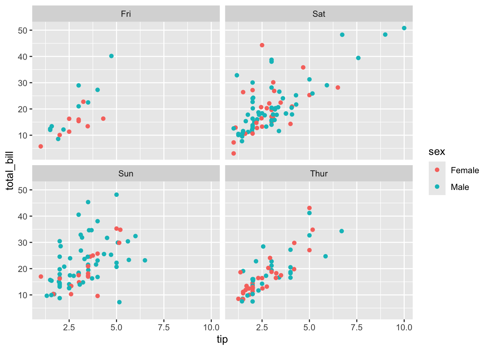

This document provides a comprehensive introduction to ggplot2, a powerful and popular data visualization package for the R programming language. We will explore the fundamental concepts of the “grammar of graphics,” which underpins ggplot2, and demonstrate how to create a wide variety of plots, from basic scatter and line charts to more advanced visualizations like maps and animations.
ggplot2 is built on the idea that you can build any plot from the same set of components: a data set, a coordinate system, and geoms (the visual marks that represent data points). You’ll learn how to combine these components to create elegant and informative graphics.
Code
# This code chunk installs the necessary packages for this tutorial.# You only need to run this once.pak::pak(c('ggplot2', 'ggthemr', 'gganimate', 'patchwork', 'ggthemes', 'tidyverse', 'gapminder', 'ggpubr', 'plotly', 'magick', 'reshape2', 'sf', 'legendry'))
ggplot2 is an elegant and versatile data visualization package in R, based on the grammar of graphics. It allows you to build plots layer by layer, providing immense flexibility and control.
1. Setup and Data Preparation
Before we start creating plots, we need to load the necessary libraries. The tidyverse is a collection of R packages designed for data science, and it includes ggplot2. We’ll also load gapminder for a sample dataset and reshape2 for the tips dataset.
Code
library(tidyverse)library(gapminder)library(ggpubr)library(ggthemr)library(ggplot2)library(plotly)library(magick)library(reshape2)# It's good practice to check the version of the package you are using.packageVersion("ggplot2")
[1] '3.5.2'
We will be using two primary datasets for our examples:
tips: A dataset from the reshape2 package containing information about tips given in a restaurant.
gapminder: A dataset from the gapminder package containing information about life expectancy, GDP per capita, and population for various countries over time.
Code
data(tips)head(tips)
total_bill tip sex smoker day time size
1 16.99 1.01 Female No Sun Dinner 2
2 10.34 1.66 Male No Sun Dinner 3
3 21.01 3.50 Male No Sun Dinner 3
4 23.68 3.31 Male No Sun Dinner 2
5 24.59 3.61 Female No Sun Dinner 4
6 25.29 4.71 Male No Sun Dinner 4
Code
data001 = gapminderhead(data001)
# A tibble: 6 × 6
country continent year lifeExp pop gdpPercap
<fct> <fct> <int> <dbl> <int> <dbl>
1 Afghanistan Asia 1952 28.8 8425333 779.
2 Afghanistan Asia 1957 30.3 9240934 821.
3 Afghanistan Asia 1962 32.0 10267083 853.
4 Afghanistan Asia 1967 34.0 11537966 836.
5 Afghanistan Asia 1972 36.1 13079460 740.
6 Afghanistan Asia 1977 38.4 14880372 786.
2. The Grammar of Graphics: Core Concepts
Every ggplot2 plot has three key components:
Data: The dataset containing the variables you want to plot.
Aesthetics (aes()): The mapping of variables from your data to visual properties of the plot. This includes things like x and y position, color, size, and shape.
Geoms (geom_...()): The geometric objects that represent your data. This could be points (geom_point), lines (geom_line), bars (geom_bar), etc.
Scatter Plot
A scatter plot is one of the simplest and most common types of plots. It uses points to show the relationship between two continuous variables. We use geom_point() to create scatter plots.
Code
p =ggplot(tips, aes(x = tip, y = total_bill)) +geom_point()p
Color by Group
We can introduce a third variable to the plot by mapping it to an aesthetic. For example, we can color the points by the sex of the person who paid the bill.
Code
p =ggplot(tips, aes(x = tip, y = total_bill, color = sex)) +geom_point()p
Size by Group
Similarly, we can map a variable to the size aesthetic to represent another dimension. Here, we size the points by the size of the party.
Code
p =ggplot(tips, aes(x = tip, y = total_bill, colour = sex, size = size)) +geom_point()p
Line Plot
Line plots are used to visualize trends over a continuous variable, such as time. We use geom_line() for this.
First, let’s aggregate the gapminder data to calculate the total population for each continent over the years.
p =ggplot(data002 %>%filter(continent =='Asia'), aes(x = year, y = pop)) +geom_line()p
Change Line Size
You can customize the appearance of the line by setting aesthetics within the geom_line() function.
Code
p =ggplot(data002 %>%filter(continent =='Asia'), aes(x = year, y = pop)) +geom_line(size =2)p
Color by Group
To compare trends across different continents, we can map the continent variable to the color aesthetic.
Code
p =ggplot(data002, aes(x = year, y = pop, colour = continent)) +geom_line()p
Area Plot
An area plot is similar to a line plot, but the area under the line is filled in. This is useful for showing cumulative totals or magnitudes over time. We use geom_area().
Code
p =ggplot(data002 |>filter(continent =='Asia'), aes(x = year, y = pop)) +geom_area(fill ='blue', alpha =0.2)p
Histogram
A histogram displays the distribution of a single continuous variable by dividing the data into bins and showing the frequency of observations in each bin. We use geom_histogram().
Let’s look at the distribution of GDP per capita in Asia and Africa in 1997.
We can compare the distributions of different groups by using the fill aesthetic and setting position = 'dodge' to place the bars side-by-side.
Code
ggplot(data002, aes(x = gdpPercap, fill = continent)) +geom_histogram(position ='dodge')
Bar Chart
Bar charts are used to display the relationship between a categorical variable and a continuous variable. geom_bar(stat="identity") is used when you want the height of the bars to represent values in the data.
Let’s look at the total population of each continent in 1997.
A box plot displays the distribution of a continuous variable across different categories. It shows the median, quartiles, and potential outliers. We use geom_boxplot().
Code
p =ggplot(tips, aes(x = day, y = tip, fill = sex)) +geom_boxplot()p
Strip Plot (Jittered Points)
A strip plot shows the distribution of a continuous variable for different categories by plotting individual points. geom_jitter() adds a small amount of random noise to the points to prevent overplotting.
Code
p =ggplot(tips, aes(x = day, y = tip)) +geom_jitter()p
Color by Group
Code
p =ggplot(tips, aes(x = day, y = tip, color = sex)) +geom_jitter(position =position_jitterdodge())p
3. Facet Plots: Creating Small Multiples
Facetting is a powerful feature in ggplot2 that allows you to create multiple subplots, with each subplot showing a different subset of the data. This is useful for comparing distributions or trends across different groups.
facet_wrap() creates a grid of plots, wrapping them into a specified number of rows and columns.
Code
p =ggplot(tips, aes(x = tip, y = total_bill)) +geom_point(aes(color = sex)) +facet_wrap(~ day)p

Control Number of Columns
You can control the number of columns in the facet grid using the ncol argument.
Code
p =ggplot(tips, aes(x = tip, y = total_bill)) +geom_point(aes(color = sex)) +facet_wrap(~ day, ncol =3)p
4. Plot Customization: Titles, Axes, and Themes
ggplot2 provides a wide range of options for customizing the appearance of your plots.
Titles, Subtitles, and Captions
You can add a title, subtitle, and caption to your plot using ggtitle() and labs().
Code
p =ggplot(tips, aes(x = tip, y = total_bill, color = sex)) +geom_point() +ggtitle("Tip by Sex")p
Code
p =ggplot(tips, aes(x = tip, y = total_bill, color = sex)) +geom_point() +ggtitle("Tip by Sex", subtitle ="Subtitle of the plot")p
Code
p =ggplot(tips, aes(x = tip, y = total_bill, color = sex)) +geom_point() +ggtitle("Tip by Sex") +labs(caption ="This is a footnote")p
Adjust Plot Size and Text
The theme() function allows you to customize almost every aspect of your plot’s appearance. plot.margin controls the margins around the plot, and text controls the font size.
Code
p =ggplot(tips, aes(x = tip, y = total_bill, color = sex)) +geom_point() +ggtitle("Tip by Sex") +theme(plot.margin =margin(2, 2, 5, 5, "cm"))p
You can also center the title and increase the overall text size.
Code
p =ggplot(tips, aes(x = tip, y = total_bill, color = sex)) +geom_point() +ggtitle("Tip by Sex") +labs(caption ="This is a footnote")p +theme(plot.title =element_text(hjust =0.5), text =element_text(size =15))
Change Axis Labels
You can change the axis labels using xlab() and ylab(), or for more control, scale_x_continuous() and scale_y_continuous().
Code
p =ggplot(tips, aes(x = tip, y = total_bill, color = sex)) +geom_point() +xlab("New X Name") +ylab("New Y Name")p
Axis Limits and Second Axis
Axis Limits
You can set the limits of the x and y axes using xlim() and ylim().
Code
p =ggplot(tips, aes(x = tip, y = total_bill, color = sex)) +geom_point() +scale_x_continuous(name ="New X Name") +scale_y_continuous(name ="New Y Name")p +xlim(min =0, 20)
Adding a Second Axis
You can add a secondary y-axis to your plot using sec_axis() within scale_y_continuous(). This is useful when you want to display two different variables with different scales on the same plot.
Code
data002 = data001 %>%group_by(year, continent) %>%summarise(pop =sum(pop), lifeExp =mean(lifeExp), .groups ='drop') %>%filter(continent =='Asia')# We need a coefficient to scale the second variable to fit on the plot.coeff =1/40000000p =ggplot(data002, aes(x = year, y = pop)) +geom_col() +geom_line(aes(y = lifeExp / coeff), size =1, color ="red") +scale_y_continuous("Population", sec.axis =sec_axis(~. * coeff, name ="Life Expectancy"), labels = scales::comma)p
5. Applying Themes for a Professional Look
ggplot2 comes with several built-in themes that allow you to quickly change the overall appearance of your plot. The ggthemes package provides even more options.
p =ggplot(tips, aes(x = tip, y = total_bill, color = sex)) +geom_point() +scale_x_continuous(name ="New X Name") +scale_y_continuous(name ="New Y Name")p +theme_bw()
A theme that mimics the style of plots in The Economist.
Code
library(ggthemes)p +theme_economist()
6. Advanced Features and Extensions
Convert ggplot to Plotly for Interactivity
The plotly package can convert your static ggplot2 plots into interactive, web-based visualizations with features like tooltips and zooming.
Code
p =ggplot(data = tips, aes(x = tip, y = total_bill, color = sex)) +geom_point() +scale_x_continuous(name ="New X Name") +scale_y_continuous(name ="New Y Name")pp =ggplotly(p)pp
Save Your Plots
ggsave() makes it easy to save your plots to a file. You can specify the filename, format, dimensions, and resolution.
Code
p +theme_economist()
Code
ggsave("myplot.png", width =6, height =4, units ="in", dpi =300)
Add Images to Your Charts
The magick package allows you to read and manipulate images, which you can then add to your ggplot2 plots using grid::grid.raster().
Code
# Add your company's logo to the graph you createdlogo <-image_read("images/logo1.png")pgrid::grid.raster(logo, x =0.1, y =0, just =c('left', 'bottom'), width =unit(0.4, 'inches'))
Create Animated Plots with gganimate
The gganimate package extends ggplot2 to create stunning animations, which are great for showing changes over time.
Code
library(gganimate)# Note: country_colors is not defined in the original code. # We will use the default ggplot2 color palette.p =ggplot(gapminder, aes(x = gdpPercap, y = lifeExp, size = pop, colour = continent)) +geom_point(alpha =0.7, show.legend =FALSE) +scale_size(range =c(2, 12)) +scale_x_log10() +labs(title ='Year: {as.integer(frame_time)}', x ='GDP per capita', y ='life expectancy') +transition_time(year) +ease_aes('linear')# To render the animation, you would typically use `animate(p)` or `anim_save()`animate(p)
Create Maps with ggplot2
ggplot2 can also be used to create maps. The sf package is commonly used for working with spatial data.
Code
library(sf)# Data from https://geojson-maps.kyd.au/geoj_data <-read_sf("data/custom.geo.json")geoj_data_asia = geoj_data |>filter(continent =="Asia")ggplot() +geom_sf(data = geoj_data_asia,aes(fill = income_grp),linewidth =0.2,color ="white",alpha =1 )
7. ggplot2 Extension Packages
The ggplot2 ecosystem is vast, with many extension packages that add new geoms, themes, and functionalities.
patchwork: Combining Multiple Plots
The patchwork package provides a simple and intuitive syntax for combining multiple ggplot2 plots into a single graphic.
The legendry package provides tools for creating more complex and customized legends.
Code
# pak::pak('legendry') # Uncomment to install
Code
library(legendry)base_plot <-ggplot(mpg, aes(displ, hwy, colour = cty)) +geom_point() +labs(x ="Engine displacement",y ="Highway miles per gallon",col ="City milesper gallon" ) +theme(axis.line =element_line())# A partial guide to display a bracketefficient_bracket <-primitive_bracket(key =key_range_manual(start =25, end =Inf, name ="Efficient"),bracket ="square",theme =theme(legend.text =element_text(angle =90, hjust =0.5),axis.text.y.left =element_text(angle =90, hjust =0.5) ))base_plot +guides(y =guide_axis_stack("axis", efficient_bracket))
8. Conclusion and Further Resources
This document has provided a tour of the fundamental concepts and capabilities of ggplot2. By understanding the grammar of graphics, you can create a vast range of visualizations to explore and communicate your data.
For more in-depth information, please refer to the following resources:
---title: "ggplot2 in R"author: "Tony Duan"execute: warning: false error: falseformat: html: toc: true toc-location: right code-fold: show code-tools: true number-sections: false code-block-bg: true code-block-border-left: "#31BAE9" code-copy: true---{width="800"}This document provides a comprehensive introduction to `ggplot2`, a powerful and popular data visualization package for the R programming language. We will explore the fundamental concepts of the "grammar of graphics," which underpins `ggplot2`, and demonstrate how to create a wide variety of plots, from basic scatter and line charts to more advanced visualizations like maps and animations.`ggplot2` is built on the idea that you can build any plot from the same set of components: a **data** set, a **coordinate system**, and **geoms** (the visual marks that represent data points). You'll learn how to combine these components to create elegant and informative graphics.```{r}#| eval: false# This code chunk installs the necessary packages for this tutorial.# You only need to run this once.pak::pak(c('ggplot2', 'ggthemr', 'gganimate', 'patchwork', 'ggthemes', 'tidyverse', 'gapminder', 'ggpubr', 'plotly', 'magick', 'reshape2', 'sf', 'legendry'))````ggplot2` is an elegant and versatile data visualization package in R, based on the grammar of graphics. It allows you to build plots layer by layer, providing immense flexibility and control.# 1. Setup and Data PreparationBefore we start creating plots, we need to load the necessary libraries. The `tidyverse` is a collection of R packages designed for data science, and it includes `ggplot2`. We'll also load `gapminder` for a sample dataset and `reshape2` for the `tips` dataset.```{r}library(tidyverse)library(gapminder)library(ggpubr)library(ggthemr)library(ggplot2)library(plotly)library(magick)library(reshape2)# It's good practice to check the version of the package you are using.packageVersion("ggplot2")```We will be using two primary datasets for our examples:* **`tips`**: A dataset from the `reshape2` package containing information about tips given in a restaurant.* **`gapminder`**: A dataset from the `gapminder` package containing information about life expectancy, GDP per capita, and population for various countries over time.```{r}data(tips)head(tips)``````{r}data001 = gapminderhead(data001)```# 2. The Grammar of Graphics: Core ConceptsEvery `ggplot2` plot has three key components:1. **Data**: The dataset containing the variables you want to plot.2. **Aesthetics (`aes()`)**: The mapping of variables from your data to visual properties of the plot. This includes things like x and y position, color, size, and shape.3. **Geoms (`geom_...()`)**: The geometric objects that represent your data. This could be points (`geom_point`), lines (`geom_line`), bars (`geom_bar`), etc.## Scatter PlotA scatter plot is one of the simplest and most common types of plots. It uses points to show the relationship between two continuous variables. We use `geom_point()` to create scatter plots.```{r}p =ggplot(tips, aes(x = tip, y = total_bill)) +geom_point()p```### Color by GroupWe can introduce a third variable to the plot by mapping it to an aesthetic. For example, we can color the points by the `sex` of the person who paid the bill.```{r}p =ggplot(tips, aes(x = tip, y = total_bill, color = sex)) +geom_point()p```### Size by GroupSimilarly, we can map a variable to the `size` aesthetic to represent another dimension. Here, we size the points by the size of the party.```{r}p =ggplot(tips, aes(x = tip, y = total_bill, colour = sex, size = size)) +geom_point()p```## Line PlotLine plots are used to visualize trends over a continuous variable, such as time. We use `geom_line()` for this.First, let's aggregate the `gapminder` data to calculate the total population for each continent over the years.```{r}data002 = data001 %>%group_by(continent, year) %>%summarise(pop =sum(pop), .groups ='drop')```Now, we can plot the population trend for Asia.```{r}p =ggplot(data002 %>%filter(continent =='Asia'), aes(x = year, y = pop)) +geom_line()p```### Change Line SizeYou can customize the appearance of the line by setting aesthetics within the `geom_line()` function.```{r}p =ggplot(data002 %>%filter(continent =='Asia'), aes(x = year, y = pop)) +geom_line(size =2)p```### Color by GroupTo compare trends across different continents, we can map the `continent` variable to the `color` aesthetic.```{r}p =ggplot(data002, aes(x = year, y = pop, colour = continent)) +geom_line()p```## Area PlotAn area plot is similar to a line plot, but the area under the line is filled in. This is useful for showing cumulative totals or magnitudes over time. We use `geom_area()`.```{r}p =ggplot(data002 |>filter(continent =='Asia'), aes(x = year, y = pop)) +geom_area(fill ='blue', alpha =0.2)p```## HistogramA histogram displays the distribution of a single continuous variable by dividing the data into bins and showing the frequency of observations in each bin. We use `geom_histogram()`.Let's look at the distribution of GDP per capita in Asia and Africa in 1997.```{r}data002 = data001 %>%filter(year ==1997, continent %in%c('Asia', 'Africa'))``````{r}ggplot(data002, aes(x = gdpPercap)) +geom_histogram()```### Color by GroupWe can compare the distributions of different groups by using the `fill` aesthetic and setting `position = 'dodge'` to place the bars side-by-side.```{r}ggplot(data002, aes(x = gdpPercap, fill = continent)) +geom_histogram(position ='dodge')```## Bar ChartBar charts are used to display the relationship between a categorical variable and a continuous variable. `geom_bar(stat="identity")` is used when you want the height of the bars to represent values in the data.Let's look at the total population of each continent in 1997.```{r}data002 = data001 %>%filter(year ==1997) %>%group_by(continent) %>%summarise(pop =sum(pop), .groups ='drop')``````{r}ggplot(data002, aes(x = continent, y = pop)) +geom_bar(stat ="identity") +scale_y_continuous(labels = scales::comma)```### Show Numbers on BarsYou can add text labels to the bars using `geom_text()`.```{r}ggplot(data002, aes(x = continent, y = pop)) +geom_bar(stat ="identity") +scale_y_continuous(labels = scales::comma) +geom_text(aes(label = pop), vjust =-0.2)```### Change Bar ColorThe `fill` argument within `geom_bar()` controls the color of the bars.```{r}ggplot(data002, aes(x = continent, y = pop)) +geom_bar(stat ="identity", fill ='red') +scale_y_continuous(labels = scales::comma) +geom_text(aes(label = pop), vjust =-0.2)```### Bar Plot OrderYou can reorder the bars based on a variable using the `reorder()` function within the `aes()` mapping.Order by population in ascending order:```{r}ggplot(data002, aes(x =reorder(continent, pop), y = pop)) +geom_bar(stat ="identity", fill ='red') +scale_y_continuous(labels = scales::comma) +geom_text(aes(label = pop), vjust =-0.2)```Order by population in descending order:```{r}ggplot(data002, aes(x =reorder(continent, -pop), y = pop)) +geom_bar(stat ="identity", fill ='red') +scale_y_continuous(labels = scales::comma) +geom_text(aes(label = pop), vjust =-0.2)```### Horizontal Barplot`coord_flip()` swaps the x and y axes, creating a horizontal bar plot.```{r}ggplot(data002, aes(x =reorder(continent, pop), y = pop)) +geom_bar(stat ="identity", fill ='red') +scale_y_continuous(labels = scales::comma) +geom_text(aes(label = pop), vjust =-0.2) +coord_flip()```### Adjust Bar TransparencyThe `alpha` aesthetic controls the transparency of the bars.```{r}ggplot(data002, aes(x =reorder(continent, pop), y = pop)) +geom_bar(stat ="identity", fill ='red', alpha =0.5) +coord_flip()```### Adjust Bar Spacing to Axis`scale_y_continuous(expand = ...)` controls the space between the bars and the axis.```{r}ggplot(data002, aes(x =reorder(continent, pop), y = pop)) +geom_bar(stat ="identity", alpha =0.5, fill ='red') +coord_flip() +scale_y_continuous(expand =expansion(mult =c(0, .1)))```### Highlight One BarYou can use `ifelse()` within the `fill` aesthetic and `scale_fill_manual()` to highlight a specific bar.```{r}ggplot(data002, aes(x =reorder(continent, pop), y = pop, fill =factor(ifelse(continent =="Asia", "Highlighted", "Normal")))) +geom_bar(stat ="identity", alpha =0.8, show.legend =FALSE) +scale_fill_manual(values =c("Highlighted"="red", "Normal"="grey50")) +coord_flip() +scale_y_continuous(expand =expansion(mult =c(0, .1)))```## Box PlotA box plot displays the distribution of a continuous variable across different categories. It shows the median, quartiles, and potential outliers. We use `geom_boxplot()`.```{r}p =ggplot(tips, aes(x = day, y = tip, fill = sex)) +geom_boxplot()p```## Strip Plot (Jittered Points)A strip plot shows the distribution of a continuous variable for different categories by plotting individual points. `geom_jitter()` adds a small amount of random noise to the points to prevent overplotting.```{r}p =ggplot(tips, aes(x = day, y = tip)) +geom_jitter()p```### Color by Group```{r}p =ggplot(tips, aes(x = day, y = tip, color = sex)) +geom_jitter(position =position_jitterdodge())p```# 3. Facet Plots: Creating Small MultiplesFacetting is a powerful feature in `ggplot2` that allows you to create multiple subplots, with each subplot showing a different subset of the data. This is useful for comparing distributions or trends across different groups.`facet_wrap()` creates a grid of plots, wrapping them into a specified number of rows and columns.```{r}p =ggplot(tips, aes(x = tip, y = total_bill)) +geom_point(aes(color = sex)) +facet_wrap(~ day)p```### Control Number of ColumnsYou can control the number of columns in the facet grid using the `ncol` argument.```{r}p =ggplot(tips, aes(x = tip, y = total_bill)) +geom_point(aes(color = sex)) +facet_wrap(~ day, ncol =3)p```# 4. Plot Customization: Titles, Axes, and Themes`ggplot2` provides a wide range of options for customizing the appearance of your plots.## Titles, Subtitles, and CaptionsYou can add a title, subtitle, and caption to your plot using `ggtitle()` and `labs()`.```{r}p =ggplot(tips, aes(x = tip, y = total_bill, color = sex)) +geom_point() +ggtitle("Tip by Sex")p``````{r}p =ggplot(tips, aes(x = tip, y = total_bill, color = sex)) +geom_point() +ggtitle("Tip by Sex", subtitle ="Subtitle of the plot")p``````{r}p =ggplot(tips, aes(x = tip, y = total_bill, color = sex)) +geom_point() +ggtitle("Tip by Sex") +labs(caption ="This is a footnote")p```## Adjust Plot Size and TextThe `theme()` function allows you to customize almost every aspect of your plot's appearance. `plot.margin` controls the margins around the plot, and `text` controls the font size.```{r}p =ggplot(tips, aes(x = tip, y = total_bill, color = sex)) +geom_point() +ggtitle("Tip by Sex") +theme(plot.margin =margin(2, 2, 5, 5, "cm"))p```You can also center the title and increase the overall text size.```{r}p =ggplot(tips, aes(x = tip, y = total_bill, color = sex)) +geom_point() +ggtitle("Tip by Sex") +labs(caption ="This is a footnote")p +theme(plot.title =element_text(hjust =0.5), text =element_text(size =15))```## Change Axis LabelsYou can change the axis labels using `xlab()` and `ylab()`, or for more control, `scale_x_continuous()` and `scale_y_continuous()`.```{r}p =ggplot(tips, aes(x = tip, y = total_bill, color = sex)) +geom_point() +xlab("New X Name") +ylab("New Y Name")p```## Axis Limits and Second Axis### Axis LimitsYou can set the limits of the x and y axes using `xlim()` and `ylim()`.```{r}p =ggplot(tips, aes(x = tip, y = total_bill, color = sex)) +geom_point() +scale_x_continuous(name ="New X Name") +scale_y_continuous(name ="New Y Name")p +xlim(min =0, 20)```### Adding a Second AxisYou can add a secondary y-axis to your plot using `sec_axis()` within `scale_y_continuous()`. This is useful when you want to display two different variables with different scales on the same plot.```{r}data002 = data001 %>%group_by(year, continent) %>%summarise(pop =sum(pop), lifeExp =mean(lifeExp), .groups ='drop') %>%filter(continent =='Asia')# We need a coefficient to scale the second variable to fit on the plot.coeff =1/40000000p =ggplot(data002, aes(x = year, y = pop)) +geom_col() +geom_line(aes(y = lifeExp / coeff), size =1, color ="red") +scale_y_continuous("Population", sec.axis =sec_axis(~. * coeff, name ="Life Expectancy"), labels = scales::comma)p```# 5. Applying Themes for a Professional Look`ggplot2` comes with several built-in themes that allow you to quickly change the overall appearance of your plot. The `ggthemes` package provides even more options.::: {.panel-tabset .nav-pills}## theme_bw()A classic black and white theme.```{r}p =ggplot(tips, aes(x = tip, y = total_bill, color = sex)) +geom_point() +scale_x_continuous(name ="New X Name") +scale_y_continuous(name ="New Y Name")p +theme_bw()```## theme_economist()A theme that mimics the style of plots in *The Economist*.```{r}library(ggthemes)p +theme_economist()```:::# 6. Advanced Features and Extensions## Convert ggplot to Plotly for InteractivityThe `plotly` package can convert your static `ggplot2` plots into interactive, web-based visualizations with features like tooltips and zooming.```{r}p =ggplot(data = tips, aes(x = tip, y = total_bill, color = sex)) +geom_point() +scale_x_continuous(name ="New X Name") +scale_y_continuous(name ="New Y Name")pp =ggplotly(p)pp```## Save Your Plots`ggsave()` makes it easy to save your plots to a file. You can specify the filename, format, dimensions, and resolution.```{r}p +theme_economist()ggsave("myplot.png", width =6, height =4, units ="in", dpi =300)```## Add Images to Your ChartsThe `magick` package allows you to read and manipulate images, which you can then add to your `ggplot2` plots using `grid::grid.raster()`.```{r}# Add your company's logo to the graph you createdlogo <-image_read("images/logo1.png")pgrid::grid.raster(logo, x =0.1, y =0, just =c('left', 'bottom'), width =unit(0.4, 'inches'))```## Create Animated Plots with gganimateThe `gganimate` package extends `ggplot2` to create stunning animations, which are great for showing changes over time.```{r}library(gganimate)# Note: country_colors is not defined in the original code. # We will use the default ggplot2 color palette.p =ggplot(gapminder, aes(x = gdpPercap, y = lifeExp, size = pop, colour = continent)) +geom_point(alpha =0.7, show.legend =FALSE) +scale_size(range =c(2, 12)) +scale_x_log10() +labs(title ='Year: {as.integer(frame_time)}', x ='GDP per capita', y ='life expectancy') +transition_time(year) +ease_aes('linear')# To render the animation, you would typically use `animate(p)` or `anim_save()`animate(p)```## Create Maps with ggplot2`ggplot2` can also be used to create maps. The `sf` package is commonly used for working with spatial data.```{r}library(sf)# Data from https://geojson-maps.kyd.au/geoj_data <-read_sf("data/custom.geo.json")geoj_data_asia = geoj_data |>filter(continent =="Asia")ggplot() +geom_sf(data = geoj_data_asia,aes(fill = income_grp),linewidth =0.2,color ="white",alpha =1 )```# 7. ggplot2 Extension PackagesThe `ggplot2` ecosystem is vast, with many extension packages that add new geoms, themes, and functionalities.## patchwork: Combining Multiple PlotsThe `patchwork` package provides a simple and intuitive syntax for combining multiple `ggplot2` plots into a single graphic.```{r}library(patchwork)p1 <-ggplot(mtcars) +geom_point(aes(mpg, disp))p2 <-ggplot(mtcars) +geom_boxplot(aes(gear, disp, group = gear))p3 <-ggplot(mtcars) +geom_smooth(aes(disp, qsec))p4 <-ggplot(mtcars) +geom_bar(aes(carb))(p1 | p2 | p3) / p4```## legendry: Advanced Legend CustomizationThe `legendry` package provides tools for creating more complex and customized legends.```{r}#| eval: false# pak::pak('legendry') # Uncomment to install``````{r}library(legendry)base_plot <-ggplot(mpg, aes(displ, hwy, colour = cty)) +geom_point() +labs(x ="Engine displacement",y ="Highway miles per gallon",col ="City milesper gallon" ) +theme(axis.line =element_line())# A partial guide to display a bracketefficient_bracket <-primitive_bracket(key =key_range_manual(start =25, end =Inf, name ="Efficient"),bracket ="square",theme =theme(legend.text =element_text(angle =90, hjust =0.5),axis.text.y.left =element_text(angle =90, hjust =0.5) ))base_plot +guides(y =guide_axis_stack("axis", efficient_bracket))```# 8. Conclusion and Further ResourcesThis document has provided a tour of the fundamental concepts and capabilities of `ggplot2`. By understanding the grammar of graphics, you can create a vast range of visualizations to explore and communicate your data.For more in-depth information, please refer to the following resources:- [ggplot2 Official Website](https://ggplot2.tidyverse.org/)- [R for Data Science, Chapter 3: Data Visualization](https://r4ds.had.co.nz/data-visualisation.html)- [RStudio ggplot2 Cheatsheet](https://rstudio.github.io/cheatsheets/html/data-transformation.html)- [The `patchwork` Package](https://patchwork.data-imaginist.com/)- [The `gganimate` Package](https://gganimate.com/)- [The `ggthemes` Package](https://yutannihilation.github.io/allYourFigureAreBelongToUs/ggthemes/)- [The `magick` Package](https://cran.r-project.org/web/packages/magick/vignettes/intro.html)